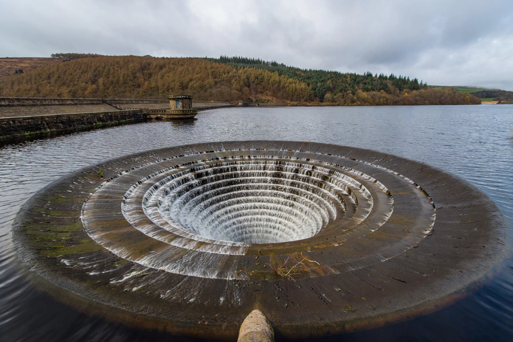

Reservoir
A reservoir is an enlarged lake, natural or artificial, created by building a dam across a river or valley to store water. Reservoirs are used for drinking-water supply, irrigation, hydroelectric generation, flood control and recreation.

Types
- Valley-dammed reservoirs — formed behind a dam across a valley
- Bank-side (off-stream) reservoirs — filled by pumping from a nearby river
- Service reservoirs — treated-water storage tanks, often underground
Management and impacts
Reservoir levels are managed against seasonal inflow and demand; sedimentation gradually reduces capacity, and dam failures can be catastrophic. Impoundment alters river ecosystems and fish passage, and flooding valleys displaces land and sometimes communities. The world's largest reservoir by volume is Lake Kariba (Zambia/Zimbabwe); by surface area, Lake Volta (Ghana).